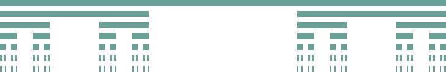

Определение: Пусть \(\varphi\) неубывающая функция на \([a_0, b_0]\). \(S = \{[a, b)| \,\,\,\, a_0 \leqslant a \leqslant b \leqslant b_0\}\).
\(m_{\varphi}([a, b)) = \varphi(b) - \varphi(a)\) – мера Стилтьеса. При \(\varphi(x) = x\) получаем стандартную меру на отрезке.
Докажем, что мера: \([a, b) = \bigsqcup_{k = 1}^n[a_k, b_k)\).
Перенумеруем полуинтервалы:
Если \(b_k > a_{k + 1} \implies [a_k, b_k)\cap [a_{k + 1}, b_{k + 1}) \ne \varnothing\).
Если \(b_k < a_{k + 1} \implies [b_k, a_{k + 1})\) ничем не покрыт.
\(\displaystyle \sum_{k = 1}^{n}(\varphi(b_k) - \varphi(a_k)) = \varphi(a) - \varphi(b)\)
Определение: Мера Стилтьеса \(m_{\varphi}\) правильная, если \(\varphi\) непрерывна слева.
Определение: (внешняя мера Жордана) Тоже самое, что внешняя мера Лебега, только берем инфимум конечных покрытий множества.
Утверждение: Мера Лебега стандартного Канторова множества равна \(0\). (а мощность континнум)
Доказательство:
На каждом шаге выкидываем \(\frac13\) каждого полуинтервала канторова множества, поэтому на \(n\) шаге \(\left(\frac13\right)^{n + 1}\) будет выкинут \(2^n\) раз. (см. картинку)

\(\mu I_k^n = \frac1{3^{n + 1}}\) и \(\displaystyle \sum_{n = 1}^{\infty}\frac{2^n}{3^{n + 1}} = 1 \implies \mu P_0 = 0 \,\,\,\,\blacksquare\)
Рассмотрим стандартную меру на \(A = [-1, 2]\). Введем отношение эквивалентности \(x\sim y \iff x - y \in \mathbb{Q}\). Пусть \(E\) множество, содержащее ровно по одной точке из каждого класса эквивалентности. \(\{q_n\}_{n = 1}^{\infty} = \mathbb{Q}\cap [-1, 2], \,\,\,\, E_n = E + \{q_n\}\).
Задача: Правильная мера Стилтьеса \(\sigma\)-аддитивна.
Доказательство:
Пусть \([a, b) = \displaystyle\bigsqcup_{n = 1}^{\infty}[a_n, b_n)\). \(\displaystyle \sum_{n = 1}^{N}\mu_{\varphi}[a_n, b_n) \leqslant \mu_{\varphi}([a, b))\), так как объединение дизъюнктно. Значит соответствующий ряд сходится.
\(\forall \varepsilon > 0 \,\,\,\, \forall a \leqslant b' < b\) в силу непрерывности слева \(\varphi\) существует \(a'_n < a_n: \,\,\,\, \varphi(a_n) - \varphi(a'_n) < \frac{\varepsilon}{2^n} \implies \varphi(b_n) - \varphi(a'_n) < \varphi(b_n) - \varphi(a_n) + \frac{\varepsilon}{2^n}\).
\([a_n, b_n) \subset [a'_n, b_n) \implies [a, b'] \subset [a, b) = \displaystyle\bigsqcup_{n = 1}^{\infty}[a_n, b_n) \subset \displaystyle\bigcup_{n = 1}^{\infty}(a'_n, b_n)\).
Выделяем подпокрытие отрезка \([a, b']: [a, b'] \subset \displaystyle\bigcup_{k = 1}^{m}(a'_{n_k}, b_{n_k})\). Имеем: \(\mu_{\varphi}([a, b')) = \varphi(b') - \varphi(a) \leqslant \mu_{\varphi}\left(\displaystyle\bigcup_{k = 1}^{m}[a'_{n_k}, b_{n_k})\right) = \displaystyle \sum_{k = 1}^{m}\mu_{\varphi}[a'_{n_k}, b_{n_k})=\) \(= \displaystyle \sum_{k = 1}^{m}(\varphi(b_{n_k}) - \varphi(a'_{n_k})) < \displaystyle \sum_{k = 1}^{m}(\varphi(b_n) - \varphi(a_n) + \frac{\varepsilon}{2^n}) = \displaystyle \sum_{k = 1}^{m}(\varphi(b_n) - \varphi(a_n)) + \varepsilon\).
В силу произвольности \(\varepsilon\): \(\mu_{\varphi}([a, b')) = \displaystyle \sum_{k = 1}^{m}(\varphi(b_n) - \varphi(a_n))\), а в силу произвольности \(b'\): \(\mu_{\varphi}([a, b)) = \displaystyle \sum_{k = 1}^{m}(\varphi(b_n) - \varphi(a_n)) \,\,\,\,\blacksquare\)
Задача: Неправильная мера Стилтьеса не является \(\sigma\)-аддитивной.
Доказательство: Докажем отрицание этого утверждения.
Пусть \(\mu_{\varphi}\) сигма-аддитивна, \(x \in \mathbb{R}\). Рассмотрим последовательнось \(\{x_n\} \subset (-\infty, x)\), такую, что \(\displaystyle \lim_{n\to \infty}x_n = x\).
Пусть \(A = [x_1, x)\) и \(A_n = [x_1, x_n)\). Тогда по теореме о полунепрерывности снизу сигма-аддитивной меры получаем \(\displaystyle \lim_{n\to \infty}\mu A_n = \displaystyle \lim_{n\to \infty}(\varphi(x_n) - \varphi(x_1)) = \mu A = \varphi(x) - \varphi(x_1)\). Значит по Гейне утверждение верно \(\,\,\,\,\blacksquare\)
Задача: Пример счетного множества на \(I\) стандартная мера Жордана которого равна \(0\).
Доказательство:
Множество \(\{\frac1n\}\).
Задача: Мощность измеримых по Лебегу множеств \(\mathfrak{M}\) – это \(2^c\).
Доказательство: Канторово множество мощности континуум и меры \(0\). Так как мера ноль и измеримые множества полны, любое подмножество Канторова множества измеримо \(\,\,\,\,\blacksquare\)
Задача: Рассмотрим стандартную меру на \(A = [-1, 2]\). Введем отношение эквивалентности \(x\sim y \iff x - y \in \mathbb{Q}\). Пусть \(E\) – фактормножество. \(\{q_n\}_{n = 1}^{\infty} = \mathbb{Q}\cap [-1, 2], \,\,\,\, E_n = E \cup \{q_n\}\).
Доказать, что \(A \subset \bigsqcup_{n = 1}^{\infty}E_n \subset [-1, 2]\). (чего)
Доказательство:
Пусть \(x \in E_k \cap E_j \implies x = q_k + x_k = q_j + x_j \implies x_k - x_j \in \mathbb{Q}\), что противоречит единственности точки из класса эквивалентности в \(E_i\). Значит объединение дизъюнктно. Остальное понятно \(\,\,\,\,\blacksquare\)